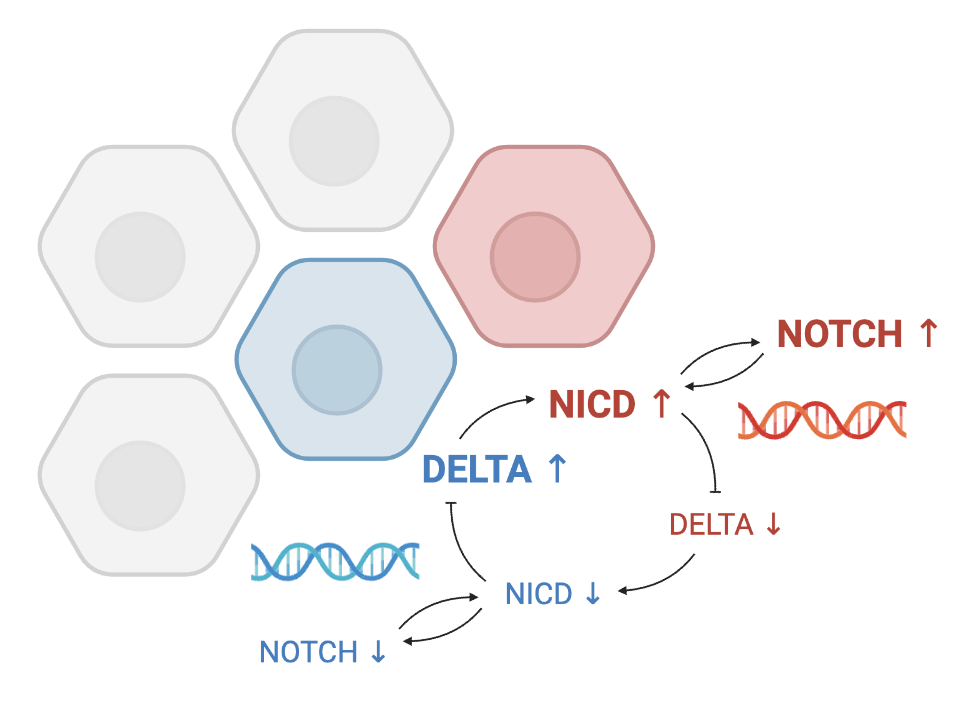

#1 Biological Modeling
Investigating Cell Differentiation in the Brain
with a Computational Model of Delta-Notch Signaling and Dynamical System Analysis
Click to view the full report
Abstract
This project investigates the role of Delta-Notch signaling in neural cell differentiation. This signaling mechanism allows for neighboring cells to interact to regulate their protein concentration, resulting in a diverse pattern of functionally different cells in the brain. The mechanism involves a ligand-receptor binding system with Delta as a transmembrane ligand and Notch as a receptor. Upon binding, the receptor is activated, releasing Notch intracellular domain (NICD) into the cell cytoplasm. NICD increases Notch transcription and inhibits Delta expression, leading to a regulation in Delta-Notch binding rate in neighboring cells. This lateral inhibition mechanism induces divergent cell fates, with cells expressing high Delta levels becoming neurons and those with high Notch levels becoming glial cells. A Python-based simulation model using differential equations and agent-based dynamical network is developed to visualize and analyze the cell differentiation process in the brain over time.
Introduction
During embryonic development, neural precursors in the brain differentiate into functionally diverse neurons and glial cells. This differentiation is made possible by a mechanism of signaling between neighboring embryonic stem cells in the brain, called Delta-Notch signaling. This signaling mechanism allows cells to receive input from their neighbors and regulate their protein concentration, similar to how leaky and integrating neurons compute their membrane potentials. The change in protein concentration within a cell subsequently affects the protein level of neighboring cells. As a result, this lateral inhibition mechanism acts to differentiate the concentration of Delta ligands and Notch receptors within the system, leading to a diverse pattern of functionally different cells in the brain. In this project, I aim to construct a network of embryonic stem cells in the brain and model the Delta-Notch signaling system to investigate its role in cell differentiation.
Delta-Notch signaling utilizes a ligand-receptor binding mechanism to induce divergent cell fates among neighboring cells. Delta is a transmembrane ligand while Notch is a transmembrane receptor. Upon binding of a neighboring Delta ligand to a cell’s Notch receptor, the receptor is activated, which results in the release of the Notch intracellular domain (NICD) into the cell cytoplasm. NICD acts to upregulate the transcription of Notch receptors while inhibiting the expression of Delta ligands within the cell. Consequently, this inhibition of Delta ligand expression leads to the reduction of Delta-Notch binding and NICD release in neighboring cells. In summary, when a cell's Notch copy number increases, the Notch transcription rates of adjacent cells are inhibited, while the Delta transcription is encouraged. Eventually, the cells expressing high Notch level become glial cells, while those with high Delta level become neurons. The figure below summarizes this modulatory mechanism.
In this project, I developed a Python-based dynamical network of cell differentiation with the Delta-Notch signaling model. To achieve this, I generated an agent-based network model that imitates the grid of cells. The model incorporates a system that uses differential equations and pre-established functions to compute the copy number of Delta and Notch in each cell, considering factors such as protein production rate, ligand-receptor binding rate, and degradation rate. The simulation continually updates the protein level of each cell agent by utilizing information from neighboring cells as well as cell-intrinsic mechanisms. Using this model, I was able to visualize the process of cell differentiation in the brain and analyze its rate over time.
